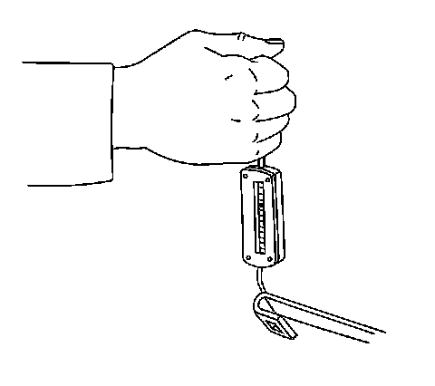

Wiper Arm Tip Pressure Check
Wiper Arm Tip Pressure Check

1. Run the wiper arm and blade assemblies to the mid wipe position.
2. Remove the blade from the arm.
3. Attach a scale to the wiper arm tip and measure the force required to lift the arm perpendicular to the windshield to the normal working height of the arm (the height with the blade attached).
The force required should be between 8.3-10.1 N (30-36 oz).
4. Replace the arm if the tip pressure is not within specifications. Refer to Windshield Wiper Arm Replacement (Windshield Wiper Arm Replacement) .